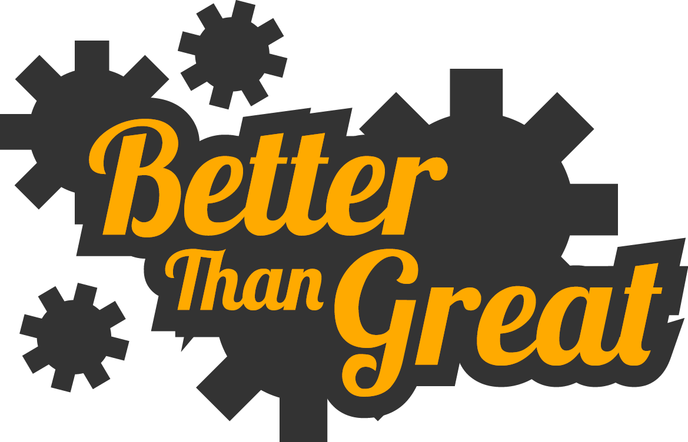

We Build Incredible Digital Products
Don't believe us? That's fine. Just take a look around. I'm sure we'll convince you. Or...
Hire UsDon't believe us? That's fine. Just take a look around. I'm sure we'll convince you. Or...
Hire UsBetter Than Great is our personal project, and is an attempt to establish a recognizable brand around much of the work that our designers and developers do. We are a freelance consulting agency dedicated to designing and developing the best in next generation digital experiences. This means staying up to date on the latest trends and best practices in User Experience, Design, and Development - while staying true to the personal philosophies that inspired us to start this company.
When founding Better Than Great, we needed to nail down our personal desires. Why were doing this incredible new thing? What were we hoping to achieve? Answering these questions would prove to be a great way to nail down our vision, and ultimately design a website that accurately portrays that vision to potential clients.
We finally settled on a very simple mission statement: “We build [positive adjective] digital products.” Some may argue that this is a terrible mission statement - and they’re probably right. But we believe that with the flexibility of [positive adjective], that no matter what we build, we’re building something that is good.
We wanted our website to create a feeling of curiosity and exploration of the entire universe around us. From the uncharted territories of deep space to the boutique just around the corner, our world is full of oft-ignored beauty. We want to inspire visitors to take a step back from the regular pace of their internet browsing to appreciate maybe not just our representation of the world around us, but the world around them at any given moment.
We think we’re doing an okay job.
The path down the main page of the site is also very symbolic in nature, as the user scrolls closer and closer to the Earth, the information they are presented about our brand becomes more specific - trailing away from all of the calls to action and flashy slogans - and gets to the real meat and potatoes of what Better Than Great hopes to accomplish for them.
After sketching out a few of our core concepts, it was time to start converting the designs into workable assets and a website.
We wanted the implementation of the Better Than Great site to highlight many of the talents that we are proud to have at our disposal. From creating a constantly moving space animation (built with 100% vanilla JavaScript) to designing fun and motivating SVG graphics, the look and feel of Better Than Great intends to portray that we have fun with what we do - and we do it well.